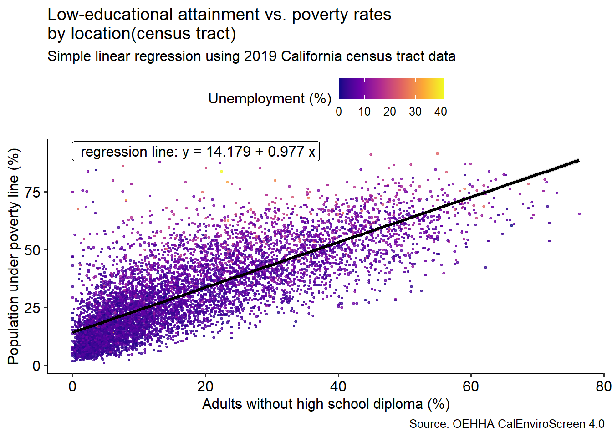

This project investigates the relationship between low educational attainment in adults and poverty across California communities using data from CalEnviroScreen 4.0, which is a statewide environmental health and socioeconomic screening tool developed by the California Office of Environmental Health Hazard Assessment (OEHHA). We use simple linear regression to model poverty rates as a function of percentage of adults living without a college degree, then extend the analysis by incorporating other variables such as unemployment and exposure to pollution. Results indicate that low educational attainment is associated with higher poverty levels, even when accounting for unemployment. Diagnostic checks suggest the linear model provides a reasonable fit, though influential observations highlight geographic variation in socioeconomic vulnerability. {FIX THIS LATER}CalEnviroScreen is a powerful tool for addressing historical and continued inequality. By linking socioeconomic factors such as educational attainment with poverty, our analysis illustrates how the tool can inform efforts by government agencies, non-governmental organizations, and community advocates to reduce pollution, protect public health, and advance environmental justice. This type of work contributes to the broader goal of making the California Dream accessible for all.
Introduction
*The introduction should motivate the analysis: What is the main research question? Why should we care about it? What other research has been done regarding this question? In addition, the introduction provides a preview of the paper: What was done in your analysis? What were your key findings? How will the rest of the paper be structured?
–>The paper should include an introduction that describes to the reader 1) the motivation for the analysis; 2) a brief overview of the broader context; 3) the knowledge gap that is addressed by the paper; 4) what was done in the analysis; 5) the key fi ndings and why they are important; and 7) the structure of the paper.*
The remainder of this paper is structured as follows: Section 2 discusses the data, Section 3 the model and the methods we used, Section 4 presents the results, and ?@sec-discussion discusses the conclusions in addition to weaknesses with this analysis.
Data
The data section should: Describe the data you will use for your analysis in suffi cient detail that another analyst could conceivably reproduce your results. Convince the reader that your data will provide evidence that will help to answer your question of interest. Introduce potential pitfalls of your dataset and any relevant assumptions necessary for your data to be useful Include basic descriptive summaries and visualizations that shed light on your question (ex. if you are interested in a treatment effect, consider comparing histograms for treated/control groups)
Focus on the relevant ???dimensions:??? What is the sample size? What are the important variables? When/where/how were the data collected? Make sure your reader understands how your response variable was measured/calculated. Some of the fi gures and tables here may be better placed in an appendix. One or two fi gures (or zero) may be all that are needed???don???t include visuals/tables that you are not prepared to discuss and interpret for your reader.
(each percentage measured for each California 2019 census location tract)
Methods
To investigate the relationship between poverty rates and educational attainment, we adopt a simple linear regression model with poverty rate as the response and low-educational rate as the predictor. Let \(Y_i\) denote percentage of the population living under the poverty line in census tract \(i\), and let \(X_i\) denote the percentage of adults without a high-school diploma in the same tract.
\[Y_i = \beta_0 + \beta_1X_i + \epsilon_i \text{ for }i=1,...,n\] where \(\beta_0\) (the intercept) represents the expected poverty rate in a census tract where 0% of the adult population is living without a high school diploma. Additionally, \(\beta_1\) represents the expected change in poverty rate percentage associated with a 1% increase in the share of adults without a high school diploma. Finally, \(\epsilon_i\) denotes a random error term that encapsulates unobserved factors that impact poverty rates that are not explained by low-educational attainment percentage.
The parameters of the model (\(\beta_0\) and \(\beta_1\)) are estimated using ordinary least squares, or OLS. Estimation of all analyses were completed with R (version 4.5.1) using the built-in lm() function, which fits linear regression models by OLS. The basic syntax is lm(response ~ predictor, data = dataset), and in our case the function lm(pov ~ edu, data = to_analyze_df) instructs R to regress the poverty rate (pov) on the percentage of adults without a high school diploma (edu) using the dataset that we have turned into a cleaned dataframe that omits null values. Here, pov is the response variable (dependent variable),edu is the predictor variable (independent variable), and the ~ operator indicates the model formula, meaning ???pov is modeled as a function of edu.??? The function estimates the intercept \(\beta_0\) and slope \(\beta_1\) by minimizing the sum of squared residuals. By default, lm() returns a model object that contains the estimated coefficients, residuals, fitted values, and summary statistics, which we accessed using functions such as summary() and coef().
To assess model fit, we report the estimated regression coefficients, standard errors, and coefficient of determination(\(R^2\)), and the associated hypothesis tests. We also present a scatterplot (Figure 1)of the data with the fitted regression line and a confidence band, which provides a visual assessment of model fit.
We adopt the standard assumptions of the linear regression model: 1. Linearity: The relationship between educational attainment and poverty is linear. 2. Independence of errors: The error terms \(\epsilon_i\) are independent across census tracts. 3. Constant variance: the error terms have constant variance across values of \(X_i\), or the low-educational attainment rate for each census tract. 4. Normality of residuals: the residuals are approximately normally distributed, meaning the error terms are normally distributed with mean zero.
To evaluate whether the model comply with the assumptions of linear regression, we conduct the following diagnostic checks:
Residual plot: We examine a scatterplot of residuals versus fitted values (Figure 2) to assess linearity, independence of errors, and constant variance. A random scatter of residuals would indicate that the linearity and constant variance assumptions are reasonable.
Normality of residuals: We use a Q???Q plot (Figure 3) and a histogram of residuals (Figure 4) to check whether they approximately follow a normal distribution. Additionally, we inspected potential other factors on poverty rates that were contained in the dataset such as unemployment (?@fig-pov-other). Overall, these these diagnostics provide evidence about the level of estimated coefficient reliability and inference validity from the model. Any violations of assumptions are noted and discussed in Section 4 and ?@sec-discussion.
# ***** check about #| include: false --> echo=false, results='hide', message=false, warning=false okay?# Modelset.seed(123) lm_fit <-lm(pov ~ edu, data=to_analyze_df) #predictor (x): edu, outcome (y): povcoefs <-coef(lm_fit)intercept <-coef(lm_fit)[1]slope <-coef(lm_fit)[2] r2 <-summary(lm_fit)$r.squaredgl <-glance(lm_fit)n <- stats::nobs(lm_fit)eq_text <-sprintf(" regression line: y = %.3f + %.3f x", intercept, slope, r2) # create equation text#scatter plot with regressionggplot(to_analyze_df, aes(x = edu, y = pov)) +#plotgeom_point(alpha =0.7, size = .5) +geom_smooth(method ="lm", se =TRUE, color ="purple") +annotate("label", x =-Inf, y =Inf, hjust =-0.1, vjust =1.1,label = eq_text, label.size = .2, alpha = .5) +labs(title ="Low-educational attainment vs. poverty rates\nby location(census tract)",subtitle ="Simple linear regression using 2019 California census tract data",x ="Adults without high school diploma (%)",y ="Population under poverty line (%)",caption ="Source: OEHHA CalEnviroScreen 4.0" ) +theme_pubr() print(eq_text)
[1] " regression line: y = 14.255 + 0.979 x"
summary(lm_fit)
Call:
lm(formula = pov ~ edu, data = to_analyze_df)
Residuals:
Min 1Q Median 3Q Max
-33.720 -7.890 -1.904 6.226 67.494
Coefficients:
Estimate Std. Error t value Pr(>|t|)
(Intercept) 14.255446 0.197844 72.05 <2e-16 ***
edu 0.978702 0.008693 112.58 <2e-16 ***
---
Signif. codes: 0 '***' 0.001 '**' 0.01 '*' 0.05 '.' 0.1 ' ' 1
Residual standard error: 11.28 on 7904 degrees of freedom
Multiple R-squared: 0.6159, Adjusted R-squared: 0.6159
F-statistic: 1.267e+04 on 1 and 7904 DF, p-value: < 2.2e-16
Figure 1
resid_df <-data.frame(.fitted =fitted(lm_fit), .resid =resid(lm_fit))ggplot(resid_df, aes(.fitted, .resid)) +geom_point(alpha = .6, size = .6) +geom_hline(yintercept =0, linetype ="dashed", color="darkgreen") +geom_smooth(method ="loess", se =FALSE, color ="purple") +labs(x ="Fitted values", y ="Residuals", title ="Residuals vs Fitted") +theme_pubr()
ggplot(data.frame(res =resid(lm_fit)), aes(x = res)) +geom_histogram(bins =30) +labs(x ="Residual", y ="Count", title ="Histogram of Residuals") +theme_pubr()
Figure 4
# ***** check about #| include: false --> echo=false, results='hide', message=false, warning=false okay?# Modelset.seed(123) lm_fit2 <-lm(pov ~ edu, data=to_analyze_df_3vars) #predictor (x): edu, outcome (y): povggplot(to_analyze_df_3vars, aes(x = unemp, y = pov)) +geom_point(alpha = .6, size = .6) +geom_smooth(method ="loess", se =TRUE) +labs(x ="Unemployment (%)", y ="Poverty (%)", title ="Exploring Unemployment vs Poverty") +theme_pubr()coefs <-coef(lm_fit2)intercept <-coef(lm_fit2)[1]slope <-coef(lm_fit2)[2] r2 <-summary(lm_fit2)$r.squaredgl <-glance(lm_fit2)n <- stats::nobs(lm_fit2)eq_text <-sprintf(" regression line: y = %.3f + %.3f x", intercept, slope, r2) # create equation text#scatter plot with regressionggplot(to_analyze_df_3vars, aes(x = edu, y = pov, color=unemp)) +#plotgeom_point(alpha =0.7, size = .5) +scale_color_viridis_c(name ="Unemployment (%)", option ="plasma")+geom_smooth(method ="lm", se =TRUE, color ="black") +annotate("label", x =-Inf, y =Inf, hjust =-0.1, vjust =1.1,label = eq_text, label.size = .2, alpha = .5) +labs(title ="Low-educational attainment vs. poverty rates\nby location(census tract)",subtitle ="Simple linear regression using 2019 California census tract data",x ="Adults without high school diploma (%)",y ="Population under poverty line (%)",caption ="Source: OEHHA CalEnviroScreen 4.0" ) +theme_pubr() print(eq_text)
[1] " regression line: y = 14.179 + 0.977 x"
summary(lm_fit2)
Call:
lm(formula = pov ~ edu, data = to_analyze_df_3vars)
Residuals:
Min 1Q Median 3Q Max
-33.562 -7.865 -1.894 6.186 67.574
Coefficients:
Estimate Std. Error t value Pr(>|t|)
(Intercept) 14.178618 0.200883 70.58 <2e-16 ***
edu 0.977021 0.008785 111.21 <2e-16 ***
---
Signif. codes: 0 '***' 0.001 '**' 0.01 '*' 0.05 '.' 0.1 ' ' 1
Residual standard error: 11.26 on 7656 degrees of freedom
Multiple R-squared: 0.6177, Adjusted R-squared: 0.6176
F-statistic: 1.237e+04 on 1 and 7656 DF, p-value: < 2.2e-16
Figure 5

Figure 6
Results
The results section is where you will describe the relevant parameter estimates, predictions, and summaries that you are using to justify your answer to your research question. You do not need to discuss the implications in great detail here. Focus on identifying the relevant model parameters/summaries and explaining them clearly and precisely. If you are using confi dence intervals, explain what the interpretation is. If you conduct hypothesis tests, be sure to identify the type I error rate and the relevant hypotheses.
#Discussion {#sec-discussion}
The discussion section is generally the last section of the paper and includes: 1. A brief summary of the paper (perhaps not too different from the introduction, but you can lean on your results and technical detail more). 2. Discussion of your key fi ndings and what their implications are for your research question. 3. Discussion of some potential weaknesses of your study. There are always weaknesses???don???t try to hide them. 4. Identifi cation of potential improvements and extensions or future areas of related research.